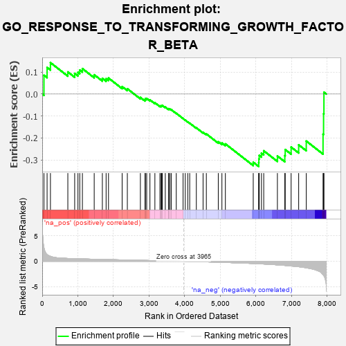
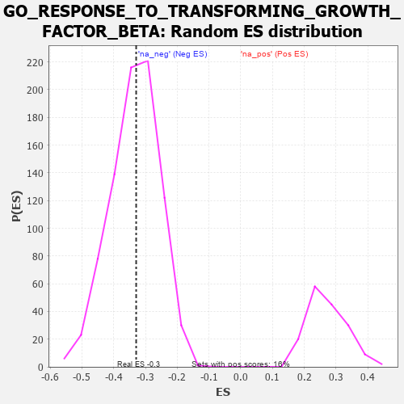

| | | Dataset | 7d |
| Phenotype | NoPhenotypeAvailable |
| Upregulated in class | na_neg |
| GeneSet | GO_RESPONSE_TO_TRANSFORMING_GROWTH_FACTOR_BETA |
| Enrichment Score (ES) | -0.32943842 |
| Normalized Enrichment Score (NES) | -0.98750764 |
| Nominal p-value | 0.48923445 |
| FDR q-value | 0.8881275 |
| FWER p-Value | 1.0 |
Table: GSEA Results Summary

Fig 1: Enrichment plot: GO_RESPONSE_TO_TRANSFORMING_GROWTH_FACTOR_BETA
Profile of the Running ES Score & Positions of GeneSet Members on the Rank Ordered List
| PROBE | GENE SYMBOL | GENE_TITLE | RANK IN GENE LIST | RANK METRIC SCORE | RUNNING ES | CORE ENRICHMENT | | 1 | TGFB3 | | | 49 | 2.654 | 0.0855 | No |
| 2 | HTRA4 | | | 137 | 1.341 | 0.1209 | No |
| 3 | SMAD5 | | | 231 | 0.979 | 0.1429 | No |
| 4 | ID1 | | | 719 | 0.555 | 0.1006 | No |
| 5 | NLK | | | 911 | 0.504 | 0.0939 | No |
| 6 | MEN1 | | | 1003 | 0.483 | 0.0990 | No |
| 7 | MEF2C | | | 1054 | 0.473 | 0.1091 | No |
| 8 | SRC | | | 1128 | 0.459 | 0.1157 | No |
| 9 | VASN | | | 1459 | 0.398 | 0.0878 | No |
| 10 | WWOX | | | 1688 | 0.359 | 0.0714 | No |
| 11 | STRAP | | | 1793 | 0.339 | 0.0699 | No |
| 12 | SMAD4 | | | 1860 | 0.326 | 0.0729 | No |
| 13 | CREB1 | | | 2243 | 0.269 | 0.0339 | No |
| 14 | HIPK2 | | | 2389 | 0.247 | 0.0241 | No |
| 15 | FNTA | | | 2755 | 0.190 | -0.0154 | No |
| 16 | PDCD5 | | | 2885 | 0.169 | -0.0259 | No |
| 17 | FGFR2 | | | 2895 | 0.167 | -0.0212 | No |
| 18 | ACVR1 | | | 2932 | 0.161 | -0.0202 | No |
| 19 | WNT4 | | | 3023 | 0.146 | -0.0266 | No |
| 20 | GCNT2 | | | 3162 | 0.128 | -0.0396 | No |
| 21 | SMAD3 | | | 3303 | 0.105 | -0.0536 | No |
| 22 | SMAD1 | | | 3337 | 0.099 | -0.0544 | No |
| 23 | TAB1 | | | 3351 | 0.097 | -0.0527 | No |
| 24 | SMAD7 | | | 3369 | 0.093 | -0.0516 | No |
| 25 | PTPRK | | | 3454 | 0.084 | -0.0593 | No |
| 26 | PIN1 | | | 3543 | 0.069 | -0.0681 | No |
| 27 | FUT8 | | | 3551 | 0.067 | -0.0666 | No |
| 28 | PARD3 | | | 3584 | 0.063 | -0.0685 | No |
| 29 | CBL | | | 3621 | 0.056 | -0.0711 | No |
| 30 | SKI | | | 3762 | 0.032 | -0.0877 | No |
| 31 | PPM1A | | | 3953 | 0.002 | -0.1116 | No |
| 32 | PARP1 | | | 4014 | -0.010 | -0.1188 | No |
| 33 | WNT2 | | | 4084 | -0.021 | -0.1268 | No |
| 34 | CRK | | | 4139 | -0.031 | -0.1326 | No |
| 35 | CD109 | | | 4325 | -0.064 | -0.1537 | No |
| 36 | SNW1 | | | 4514 | -0.096 | -0.1741 | No |
| 37 | SNX25 | | | 4606 | -0.119 | -0.1815 | No |
| 38 | EP300 | | | 4941 | -0.186 | -0.2173 | No |
| 39 | PDPK1 | | | 5043 | -0.207 | -0.2229 | No |
| 40 | FLCN | | | 5140 | -0.235 | -0.2269 | No |
| 41 | STK11 | | | 5922 | -0.443 | -0.3102 | No |
| 42 | USP9Y | | | 6075 | -0.498 | -0.3122 | Yes |
| 43 | FBN1 | | | 6080 | -0.499 | -0.2955 | Yes |
| 44 | UBB | | | 6090 | -0.503 | -0.2793 | Yes |
| 45 | ROCK1 | | | 6152 | -0.520 | -0.2690 | Yes |
| 46 | SMAD2 | | | 6216 | -0.541 | -0.2583 | Yes |
| 47 | LTBP2 | | | 6600 | -0.712 | -0.2821 | Yes |
| 48 | ADAM9 | | | 6808 | -0.819 | -0.2799 | Yes |
| 49 | GIPC1 | | | 6819 | -0.826 | -0.2527 | Yes |
| 50 | PDE2A | | | 6985 | -0.927 | -0.2415 | Yes |
| 51 | OVOL2 | | | 7197 | -1.068 | -0.2312 | Yes |
| 52 | UBC | | | 7410 | -1.274 | -0.2140 | Yes |
| 53 | FYN | | | 7881 | -2.622 | -0.1828 | Yes |
| 54 | CAV3 | | | 7896 | -2.739 | -0.0899 | Yes |
| 55 | FBN2 | | | 7906 | -2.873 | 0.0082 | Yes |
Table: GSEA details [plain text format]

Fig 2: GO_RESPONSE_TO_TRANSFORMING_GROWTH_FACTOR_BETA: Random ES distribution
Gene set null distribution of ES for GO_RESPONSE_TO_TRANSFORMING_GROWTH_FACTOR_BETA